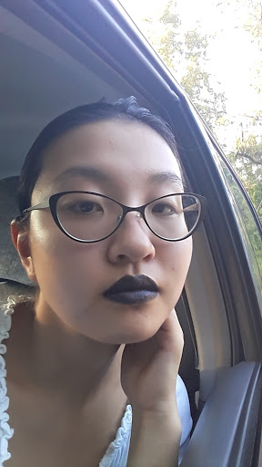
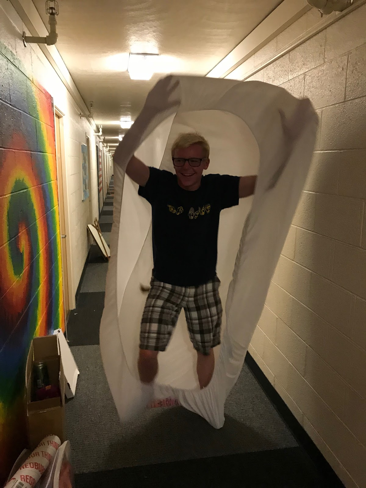
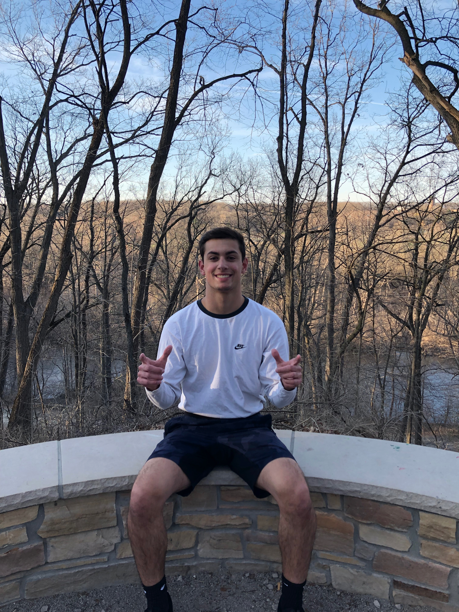
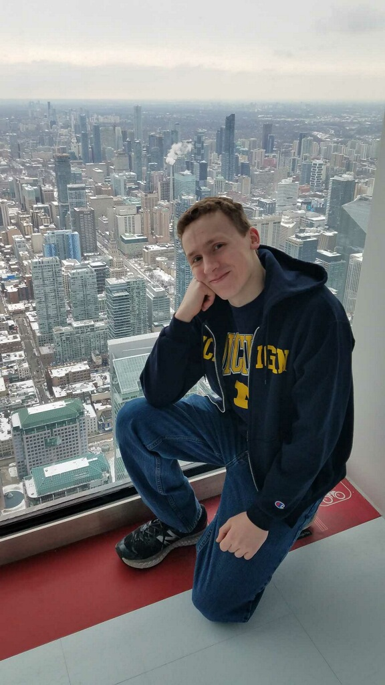

Christina is a freshman without a major. Outside of Chem 215, she can be found singing arias, allegedly trying to learn more about pop culture, and actually reading anything she can get her hands on.

Evan Carpenter is a freshman in LSA studying chemistry. He can be found searching wikipedia for random information, and is a big fan of chemical nomenclature. He enjoys spending time with the friends he’s made in Chem 215, and learning about the world!

Alexander Pallazola is a Sophomore in LSA studying Biology and can be found between the hours of 2:00-4:30 am studying. Big fan of sports and even bigger fan of burritos. He enjoys running and spending time with friends while complaining about homework he should have already done. Notorious for wearing all grey outfits; yet has found a passion for Dieckmann Condensation.

Noah Burns is a freshman in LSA studying chemistry. His greatest accomplishments include getting 90% yield on an orgo 2 lab and eating seven dining hall cookies in one sitting. Outside of chemistry, he enjoys classical music and competitive Super Smash Bros. Melee.